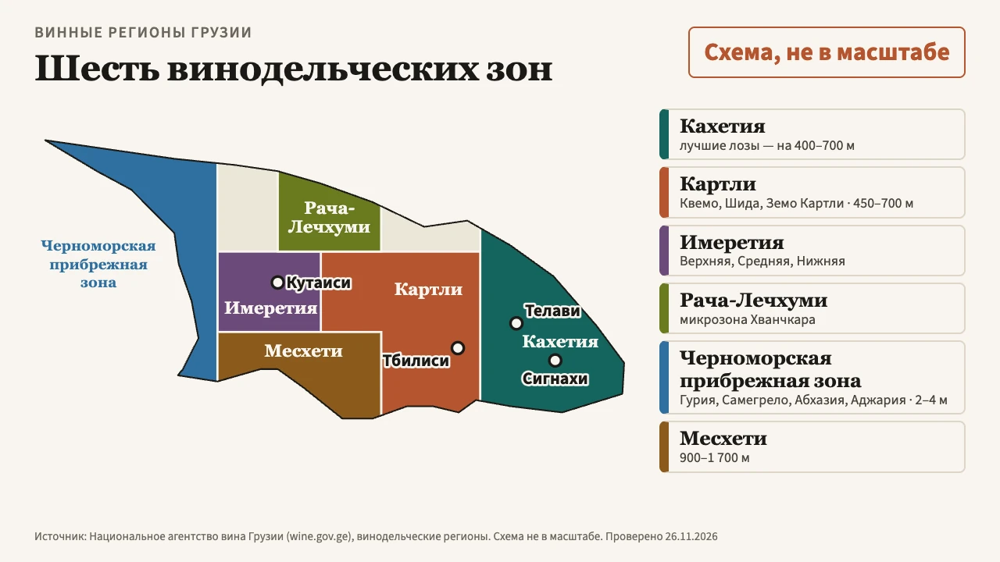
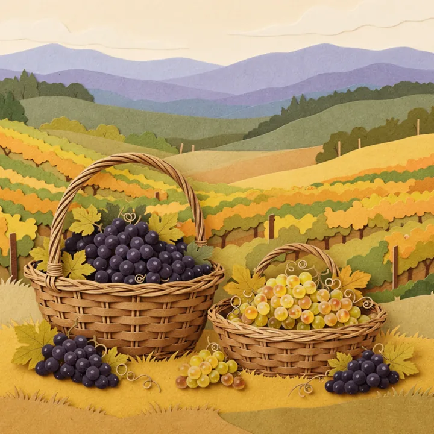
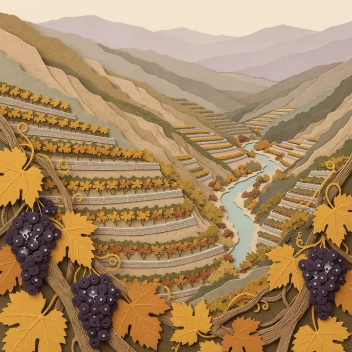
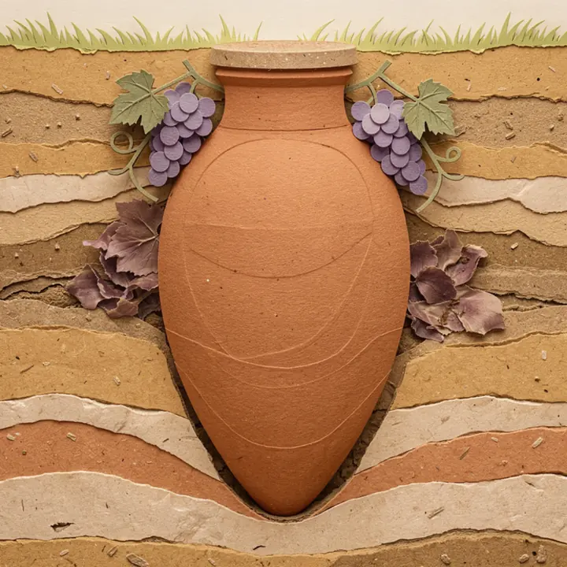

- Регионов виноделия
- 6
- Записей в списке, наш подсчёт
- 33
- Квеври в списке ЮНЕСКО
- 2013
- Ртвели
- сентябрь–декабрь
- До Кахетии от столицы
- 1 ч 50 мин
- Предел для водителя
- 0,3 ‰
Проверено 26 ноября 2026 года.

Шесть винодельческих зон на одной карте
Официально зон шесть, и у большинства есть подзоны. Высота виноградников указана для четырёх из них.
Патентное ведомство Сакпатенти в каталоге 2010 года делило карту иначе — по 10 административным регионам. Мы держимся деления агентства.
Побережье и Месхети: две зоны, о которых часто забывают
В этом делении они идут пятой и шестой. Прибрежная объединяет Гурию, Самегрело, Абхазию и Аджарию, а виноградники здесь начинаются на высоте 2–4 м над морем.
Месхети — самая высокая: лозы растут на 900–1 700 м. Сезон урожая заканчивается на побережье: в декабре в Гурии и Аджарии собирают чхавери.
Кахетия: где делают Киндзмараули, Цинандали и Мукузани
Вино Кахетии — это прежде всего защищённые названия: здесь делают 8 из 10 разобранных ниже. Сам край называют самым важным винодельческим регионом страны.

Подзон две — Шида и Гаре; лучшие виноградники лежат на 400–700 м над морем.
Наименования места происхождения: что значит название на этикетке
Наименование места происхождения — это название места, чаще всего микрозоны, закреплённое за вином из заданных сортов и заданного типа. В списке ведомства 33 записи (наш подсчёт на 25 ноября 2026 года); самая свежая — Сазанос Оцханури, внесённая 30 сентября 2025 года.
В каталоге патентного ведомства 2010 года зарегистрированных наименований 18, так что старые подсчёты устарели.
Подробнее о трёх:
- Киндзмараули — красное природно полусладкое из саперави, сахар 18–45 г/л, муниципалитет Кварели.
- Цинандали — сухое белое (ркацители не меньше 85 %, мцване кахури не больше 15 %) или сухое красное из саперави, муниципалитет Телави.
- Мукузани — красное сухое только из саперави. Выдержка в деревянных бочках не обязательна, а если она есть — не меньше 6 месяцев.
Ещё пять — коротко. Кварели — красное сухое, Телиани — красное сухое из каберне совиньон, а не из местного сорта, Манави — белое сухое из мцване кахури, Напареули — сухое белое или красное. Ахашени — полусладкое, о нём ниже.
Названия «Телави» в списке нет, есть «Телиани»; нет там и «Алазанской долины».
![Инфографика «Наименование → цвет → сладость»: Кахетия — Цинандали (сухое белое или красное), Мукузани (красное сухое), Киндзмараули (красное природно полусладкое), Ахашени (красное полусладкое), Кварели (красное сухое), Манави (белое сухое), Напареули (белое или красное сухое), Телиани (красное сухое, каберне совиньон); Картли — Атенури (белое сухое, игристое); Рача-Лечхуми — Хванчкара (красное природно полусладкое); 33 записи в списке агентства (наш подсчёт), на схеме — 10 описанных; wine.gov.ge](../../assets/img/wine-regions-ru/vinnye-regiony-gruzii-naimenovaniya-mob.webp)
Наш совет: на этикетке ищите название микрозоны — по нему видно и сорт, и тип вина. Бутылки домой везите в пределах норм: сколько вина и чачи можно вывезти.
Винодельни Кахетии: как выбрать и как добраться
Выбирайте винодельню по тому, какое вино с защищённым названием она делает и работает ли с квеври. Дорогу планируйте сразу так, чтобы после дегустации никто не садился за руль.
Путь на машине из Тбилиси до Кахетии занимает 1 ч 50 мин, но источник не называет город. Подробно — как добраться из столицы в Телави и вино и погреба Сигнахи.
Если никто не хочет оставаться трезвым, наймите машину с водителем или езжайте общественным транспортом.
Наш совет: выберите два-три погреба рядом друг с другом и оставьте между ними время на обед.
Картли и Имеретия: игристые вина
Оба края известны игристыми винами: в Картли это Атенури, на западе — вина из цицки-цоликоури и крахуны.
Картли: Атенури и долины рек
Виноградники Картли лежат на 450–700 м, в бассейнах Мтквари (Куры), Лиахви и Ксани. Подзон три — Квемо, Шида и Земо Картли.
Атенури (Атени) — белое сухое, игристое и слабоигристое из чинури, горули мцване и алиготе.
Имеретинское вино: цицка, цоликоури и крахуна
Вина из этих сортов отличает естественная игристость. Подзоны края — Верхняя, Средняя и Нижняя.
Если поедете на запад пробовать эти вина, вот как добраться до Кутаиси.
Рача-Лечхуми: откуда Хванчкара
Вино Рачи — это прежде всего Хванчкара: красное природно полусладкое только из александроули и муджуретули. Виноград для него берут с сахаристостью не ниже 24 %; микрозона — у Амбролаури, в нижней части края.

Хванчкара или Киндзмараули: в чём разница
Оба красные и природно полусладкие, но их делают в разных краях и из разных сортов, а сахар и спирт у них нормированы по-своему.
| Хванчкара | Киндзмараули | |
|---|---|---|
| Где | у Амбролаури | Кварели |
| Сорта | александроули и муджуретули | саперави |
| Сахар | 30–45 г/л | 18–45 г/л |
| Спирт | не меньше 11 % | не меньше 10,5 % |
Сорта винограда: саперави и ещё 500 местных
В 2024 году, в рекордный для независимой Грузии урожай (около 320 тыс. т переработанного винограда), больше всего переработали ркацители — 136 тыс. т — и саперави — 130 тыс. т.
Только из саперави делают Мукузани, Кварели и Ахашени, а Киндзмараули — из саперави и саперави будешури.
Уникальных местных сортов насчитывают 525, описано более 500. Ещё на официальных страницах названы хихви и киси, чинури, цицка, цоликоури и крахуна.
Сухое или полусладкое: как понять по названию
Большинство описанных здесь вин — сухие. Природно полусладкие — Киндзмараули и Хванчкара, полусладкое без слова «природно» — Ахашени из саперави.
Сухие — Цинандали, Мукузани, Кварели, Телиани, Манави и Напареули; Атенури бывает и игристым.
Квеври: метод из списка ЮНЕСКО
Квеври — яйцевидный глиняный сосуд, в котором вино Грузии делают, выдерживают и хранят. Виноград давят, а сок, кожицу, плодоножки и косточки кладут в сосуд, закрывают его и зарывают в землю; брожение идёт 5–6 месяцев.

ЮНЕСКО называет это древним традиционным методом и пишет, что знания передают в семьях, а погреб считают самым святым местом дома. Такое виноделие живёт по всей стране, особенно в сёлах.
Сколько лет виноделию здесь, подсказывают находки археологов. В статье PNAS 2017 года следы виноградного вина в сосудах датированы примерно 6000–5800 годами до н. э. Находки сделаны в Квемо Картли, примерно в 50 км к югу от столицы. Авторы называют их самым ранним таким свидетельством на Ближнем Востоке, а не в мире.
Это около 7 800–8 000 лет назад; число «8 000 лет» — формулировка агентства, у авторов статьи его нет.
Как вино пьют за столом и кто такой тамада — вино, чача и супра.
Янтарное вино Грузии: что это
Это вино долгой мацерации на кожице; его ещё называют оранжевым. По годовому отчёту ведомства, его внесли в список специальных вин Международной организации винограда и вина (OIV).
Ртвели: когда ехать в винные регионы
Сбор винограда обычно идёт с сентября по декабрь, и гости могут увидеть его своими глазами. Начинают в сентябре с ркацители в Кахетии, заканчивают в декабре чхавери в Гурии и Аджарии.
Сроки меняются по годам: в 2024 году виноград начали принимать в Кахетии 13 августа, а в Лечхуми — 4 октября. Поэтому дату уточняйте на месте. Чего ждать от погоды — осень: сентябрь и октябрь.
Жара и вода: как пробовать вино под солнцем
Пейте воду регулярно: алкоголь и долгие часы на солнце повышают риск обезвоживания. В жару британская служба здравоохранения NHS советует не злоупотреблять алкоголем и не быть на солнце с 11:00 до 15:00.
Качество воды в стране разное, бутилированная продаётся повсюду, а вне столицы медпомощь ограничена. О зное на востоке — жара летом в Телави: как не перегреться.
Если нужен врач рядом с Телави, откройте каталог клиник Телави на 100doc.ge. При угрозе жизни звоните 112; вот как вызвать скорую и что сказать.

Наш совет: берите бутылку воды на каждого, пробуйте после еды и в тени, сплёвывайте или пропускайте бокалы. С детьми — панамы и перерывы в прохладе.
Дегустация вина в Грузии: здоровье и руль
Пробуйте маленькими порциями и после еды, пейте воду, а за руль после бокала не садитесь. На экскурсии в погреб продегустировать всё не обязательно: вы вправе не допивать каждый бокал.
Сколько выпить — уже много и как снизить вред: как пить без вреда: советы NHS. Бутылки без этикетки и домашняя чача — отдельный риск: отравление метанолом: признаки и что делать.
Можно ли за руль после дегустации: 0,3 промилле
Нет. Кодекс Грузии об административных правонарушениях (КоАП) считает опьянением водителя больше 0,3 ‰ алкоголя в крови (0,03 %). За 0,3–0,7 ‰ право управлять приостанавливают на 6 месяцев, за большее или за отказ от проверки — на 1 год.
Закон Грузии «О дорожном движении» запрещает водить в опьянении и обязывает пройти проверку по требованию полиции при достаточных основаниях.
«В Грузии действует политика нулевой терпимости к вождению в нетрезвом виде», — пишет правительство Канады (перевод наш). Оно же предупреждает о штрафах, задержании и лишении прав на месяцы и годы, о частых смертельных ДТП и советует не ездить в темноте.
Правительство Великобритании отмечает, что предел в Грузии ниже британского, и советует не пить, если вы за рулём.
Итог: Кодекс ставит порог, а правительство Канады говорит о нуле. Ориентир — не пить вовсе. Остальные правила в дороге — правила дорожного движения: что непривычно.

Наш совет: решите, кто остаётся трезвым, ещё до первого погреба, или наймите водителя на день.
Частые вопросы
Сколько винных регионов в Грузии — пять или шесть?
Какое вино Грузии самое известное и где его делают?
Цинандали — белое или красное?
Что такое квеври и почему метод в списке ЮНЕСКО?
Сколько лет грузинскому вину?
Когда лучше ехать в винные регионы?
Источники
- Национальное агентство вина Грузии: винодельческие регионы (на английском) ↑
- Национальное агентство вина Грузии: реестр наименований места происхождения, стр. 1–3 (на английском) ↑
- ЮНЕСКО: древний грузинский традиционный метод виноделия в квеври (на английском) ↑
- Национальная администрация туризма Грузии: ртвели в Грузии (на английском) ↑
- Законодательный вестник Грузии (matsne.gov.ge): Кодекс Грузии об административных правонарушениях, ст. 116, ч. 1–2, прим. 10, редакция 13 октября 2026 года (PDF) (на грузинском) ↑
- Правительство Канады: Travel advice and advisories — Georgia, обновлено 27 августа 2026 года (на английском; оригинал цитаты: «Georgia has a zero-tolerance policy for drinking and driving.») ↑
- Сакпатенти: наименования места происхождения грузинских вин, каталог 2010 года (на английском) ↑
- Национальное агентство вина Грузии: Картли, винодельческие регионы, стр. 2 (на английском) ↑
- Национальное агентство вина Грузии: Атенури (Атени), описание наименования (PDF) (на английском) ↑
- Национальное агентство вина Грузии: Хванчкара, описание наименования (PDF) (на английском) ↑
- Национальное агентство вина Грузии: Киндзмараули, описание наименования (PDF) (на английском) ↑
- Национальное агентство вина Грузии: Цинандали, описание наименования (PDF) (на английском) ↑
- Национальное агентство вина Грузии: Мукузани, описание наименования (PDF) (на английском) ↑
- Национальное агентство вина Грузии: Кварели, описание наименования (PDF) (на английском) ↑
- Национальное агентство вина Грузии: Телиани, описание наименования (PDF) (на английском) ↑
- Национальное агентство вина Грузии: Манави, описание наименования (PDF) (на английском) ↑
- Национальное агентство вина Грузии: Напареули, описание наименования (PDF) (на английском) ↑
- Национальная администрация туризма Грузии: Кахетия (на английском; оригинал: «Distance to the location by road from: Tbilisi 1:50 hr») ↑
- Национальная администрация туризма Грузии: грузинское вино (на английском) ↑
- Национальное агентство вина Грузии: урожай 2024 года и сроки приёмки винограда, новость от 24 октября 2024 года (на английском) ↑
- Национальное агентство вина Грузии: Ахашени, описание наименования (PDF) (на английском) ↑
- Национальное агентство вина Грузии: программы, грузинские сорта винограда (на английском; оригинал: «8 thousand continuous vintages») ↑
- McGovern et al. Early Neolithic wine of Georgia in the South Caucasus. PNAS 2017; 114(48): E10309–E10318 (копия в PubMed Central; doi 10.1073/pnas.1714728114) (на английском) ↑
- Национальное агентство вина Грузии: годовой отчёт 2025 года (PDF, с. 21) (на английском) ↑
- NHS: обезвоживание (на английском) ↑
- NHS: тепловое истощение и тепловой удар (на английском) ↑
- Правительство Великобритании (GOV.UK): Georgia — Health (на английском; оригинал: «Dial 112 and ask for an ambulance») ↑
- Законодательный вестник Грузии (matsne.gov.ge): Закон Грузии «О дорожном движении», ст. 21, п. 15–16 (на грузинском) ↑
- Правительство Великобритании (GOV.UK): Georgia — Safety and security (на английском; оригинал: «Georgia has a lower blood alcohol content limit than the UK, so avoid alcohol if driving.») ↑
Это справочная информация, а не медицинская консультация: решение о лечении принимает врач. Проверено 26 ноября 2026 года.